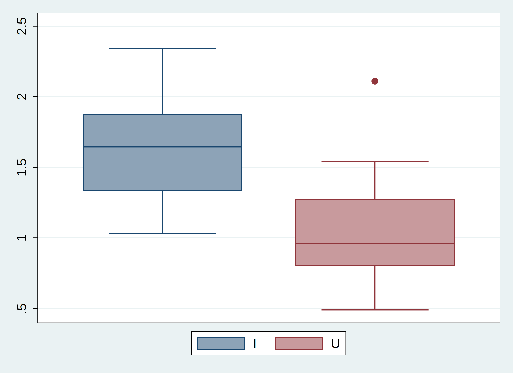

Answer 2.36
Below are the box plots for the I and U groups. The distribution shows that plants in the I group generally have heavier pod weights. Sample 7 in the U group has the pot weight of 2.11 and was plotted as an outliner in the graph.

Answer 2.37
Plants in the I group generally grow better than plants in the U group, since the I group has higher mean and lower standard deviation in terms of pod weights. If the pod weight is one of the metrics that assesses the plant growth, then the statistics indicate that inoculation is effective for soybean growth.
Answer 2.38
Below is the descriptive statistics for variable C. Obs: number of observations; Std. Dev.: standard deviation; Min: minimum; Max: maximum.
Variable | Obs Mean Std. Dev. Min Max
-------------+---------------------------------------------------------
C | 41 -4.949668 12.48342 -38.09524 19.81982
Below is the box plot of the variable C. The median of C is below zero. The third quartile is above zero. There are two outliners below zeros.
Answer 2.39
Below is the scatter plot for variable C by tobacco use group. The x-aixs variable Cat_pyr indicates categories of 10 pack-year groups. Each group number corresponds to a pack year group: 1-> 0-9.9 pack years; 2-> 10-19.9 pack years; 3-> 20-29.9 pack years; 4-> 30-39.9 pack years; 5-> 40+ pack years.
Answer 2.40
The figure implies that C is decreasing as the difference in pack-years increases. This might indicate that the heavier-smoking twin has a smaller lumbar spine bone mineral density, which suggests that tobacco use has a negative relationship with lumbar spine bone mineral density.
Answer 4.61
. dis binomialp(10,0,.0067)
.93498438
The probability of become blind over 10 years = 1 - 0.935 = 0.065
Answer 4.62
The probability of not becoming blind over n years = 1 - 0.1 = 0.9. Thus binomialp (n,0,.0074). The number n is 14.2 years. The logarithmic calculation is completed with my own calculator.